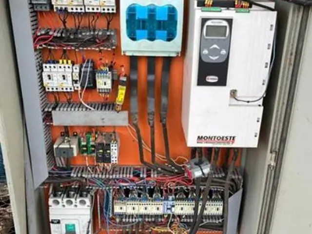
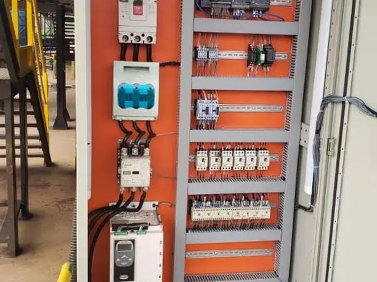
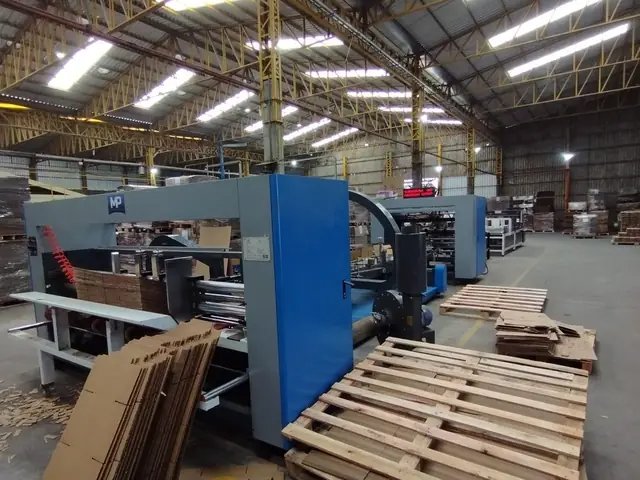
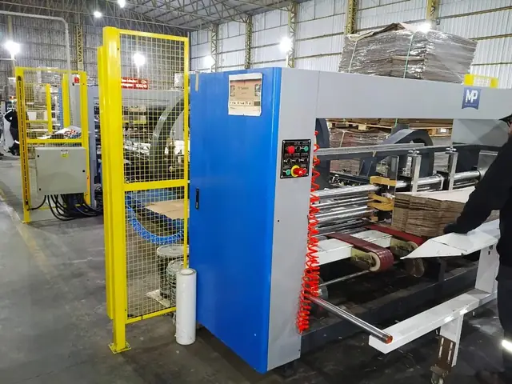

Máquina fora da NR-12 pode ser interditada e parar a sua produção. Confira 8 pontos da sua operação.
Responda com Sim, Não ou Não sei. A NR-12 vale para máquinas novas e usadas, inclusive as mais antigas da linha.
Checklist de Risco Iminente NR-12
Pergunta 1 de 88 perguntas, sem custo. O cadastro fica para o final, para ver o resultado.
Os painéis elétricos das máquinas estão trancados, sinalizados e sem nenhuma “parte viva” (fios descascados/contatos) exposta?
Não sabe responder? Marque Não sei.
- Desde 2016
- +1.000 clientes
- Projeto, execução e laudo com ART
- Sede em São Leopoldo/RS, atendimento em todo o Brasil
A NR-12 vale para máquina nova e para máquina usada.
Adequamos as duas, inclusive reconstituindo projetos quando não há documentação.

Antes
Depois
Antes
DepoisAdiar custa caro, em três frentes.
A adequação de máquinas à NR-12 é obrigatória, para máquinas novas e usadas. Sem conformidade:
- Risco jurídicoInterdição da máquina ou do setor: sua linha para de um dia para o outro.
- Risco financeiroMultas, indenizações, ações regressivas do INSS e perda de contratos.
- Risco humanoCortes, esmagamentos e amputações: acidentes evitáveis.
Como funciona o checklist
- Você responde 8 perguntas com Sim, Não ou Não sei.
- Informa nome, empresa, WhatsApp e e-mail.
- Vê o resultado na hora, ponto a ponto: o que está em ordem, o que está em aberto e o que precisa ser verificado.
- Painéis elétricos
- Inventário
- Documentação
- Proteções e interfaces
- Emergência e rearme
- Manuais
- Capacitação
- Procedimentos
O checklist não substitui a apreciação de risco, que é o diagnóstico técnico de cada máquina e é um serviço contratado. Ele aponta os pontos em aberto.
Do laudo à obra: projeta, executa e atesta.
Ciclo completo: apreciação de risco, projeto, execução e laudo com ART, com um só fornecedor.
- Apreciação de risco
- Inventário de risco
- Projeto executivo
- Adequação física
- Laudo
- Documentação
Também em NR-10: prontuário de instalações elétricas (PIE), relatório técnico de inspeção (RTI), projetos elétricos, SPDA, aterramento, adequação de comandos para extra baixa tensão e reforma de painéis e instalações elétricas.
Perguntas frequentes
Preciso me cadastrar para fazer o checklist?
Para responder, não. Para ver o resultado, sim: no fim das 8 perguntas você informa nome, empresa, WhatsApp e e-mail.
O checklist tem custo? Ele substitui a apreciação de risco?
Não tem custo e não substitui. O diagnóstico real de cada máquina é dado pela apreciação de risco, e num parque fabril o conjunto das apreciações forma o inventário de risco. Esse trabalho é contratado. O checklist aponta os pontos em aberto.
Marquei Não sei em várias perguntas. E agora?
Não sei conta como ponto a verificar. O resultado lista esses pontos para você levar a quem responde tecnicamente pela planta: SESMT, técnico de segurança ou gerente de manutenção.
A adequação vai parar a minha produção?
Nosso foco é minimizar o impacto. Trabalhamos com paradas programadas e estratégicas, 100% alinhadas com o seu cronograma. Assim, realizamos as intervenções necessárias com segurança e eficiência, sem gerar o caos de uma parada não planejada na sua fábrica.
Máquina antiga ou usada também precisa ser adequada?
Sim. A NR-12 vale para máquinas novas e usadas. Adequamos as duas, inclusive reconstituindo projetos quando não há documentação.
Vocês só fazem o laudo ou também executam?
Ciclo completo: apreciação de risco, projeto, execução e laudo, com um só fornecedor.
A Previsio atende a minha região?
Todo o Brasil. Sede em São Leopoldo/RS, com projetos no país e no exterior.
O que a Previsio faz com os meus dados?
Usa seu nome, empresa, WhatsApp, e-mail e as respostas do checklist para mostrar o resultado e para falar com você sobre a adequação das suas máquinas. Não vende nem cede seus dados. Para corrigir ou apagar, escreva para vendas@previsio.com.br.
Recebi notificação ou tenho auditoria marcada. Preciso fazer o checklist?
Não. Ligue para (51) 3466-9601 ou escreva para vendas@previsio.com.br.
Sua operação passaria em uma fiscalização hoje?
São 8 perguntas. O resultado aparece assim que você conclui o cadastro.
Fazer o checklist NR-12